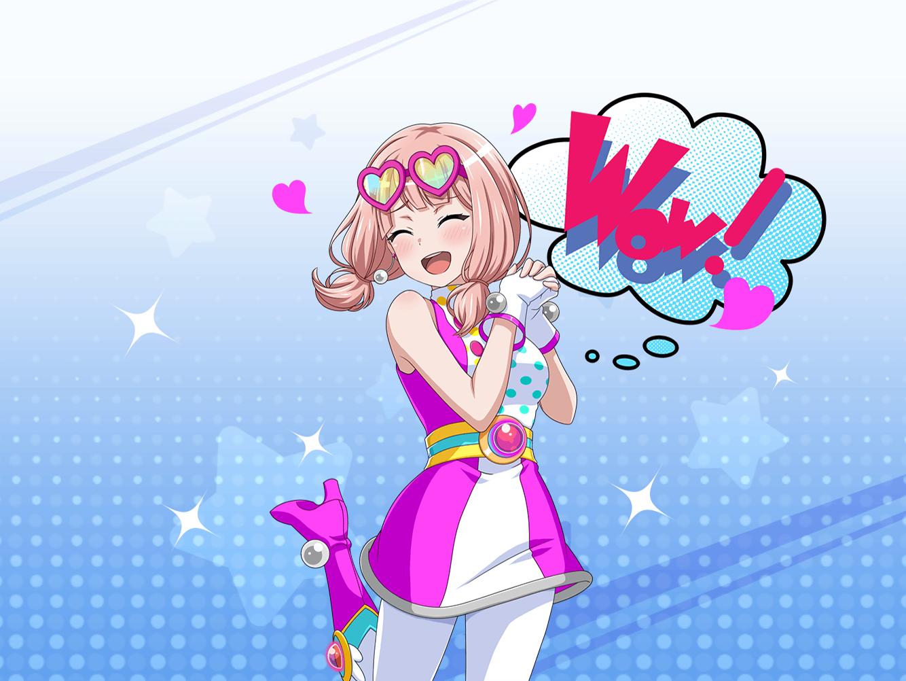

ショッピングモール 映画館前
まりな
あら？
今、映画館から出てきたの、ひまりちゃんよね。
おーい、ひまりちゃ〜ん！
ひまり
あ……まりなさん、{{userName}}さん……
ひまり
……ふえぇ……ひっく……
……う、うえぇ～～んっ！！
まりな
ええっ！？
ちょ、ちょっとひまりちゃん！？
どうしたの！？ 何があったの！？
ひまり
こ、この映画……
……すっっっごく、いい話だったんですぅ～～っ！
ぐすっ、うぅ～～っ！
まりな
な、なるほど。
感極まって、思わず泣いちゃったのね
ひまり
うぅ～……本当にいい映画でした～～っ！
もう、超最高でした！
これから本屋行って、原作マンガ買ってきますっ！
まりな
ふふ、そんなに面白かったのね。
ちょうど私達も本屋に行くところだし、一緒に行こっか！
まりな
へえ、みんなでマンガのストーリーを！
いいわね、楽しそう！
ひまり
はい、すっごい楽しかったです！
もう、モカが作る話がとにかくメチャクチャで～！
ひまり
私がわけのわからない謎の血を継いでいたり、
薫先輩がアンドロイドだったり……
あっ、私をかばって、巴がケガをしちゃったりしてました！
ひまり
その時、私ってば作り話っていうの忘れて、
本気で巴のこと心配しちゃって……
いやだよ巴～～って思わず叫んじゃいましたよ
ひまり
……でも、お話だってわかってても、
巴がケガしたら、私……やっぱり泣いちゃうだろうなぁ
まりな
ふふっ。それだけみんなのことが大事ってことだよね
ひまり
えへへ～、そうかもです！
なんかやっぱ、みんなでいるのっていいなって！
ひまり
たとえ作り話だとしても、
みんなと離れるなんて考えられませんよ
まりな
ふふ、素敵な時間になったのね。
……ところで、さっき聞いたストーリー、
結構面白かったけど、もうマンガにはしないの？
まりな
巴ちゃんがひまりちゃんをかばうシーンとか、
想像すると結構じーんとくる気がするんだけど……
キミもそう思うよね？
ひまり
ええっ、ウソ！ ほんとですか！？
やっぱり次の新人賞に応募するべきかな……！？
みんなに相談しなきゃ！
まりな
うんうん、ぜひそうして！
出来上がったら、私達にも読ませてね
ひまり
はいっ！ もちろんですっ！
マンガが出来たら、１番に感想聞きに行きますねっ！
ひまり
よーっし！
そのためにも、いろんなマンガ読んで研究するぞぉ～っ！
ひまり
えいえい、おーっ！